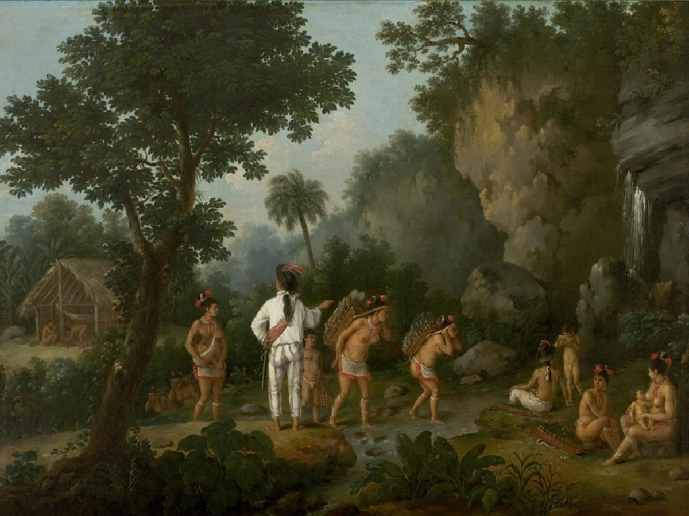
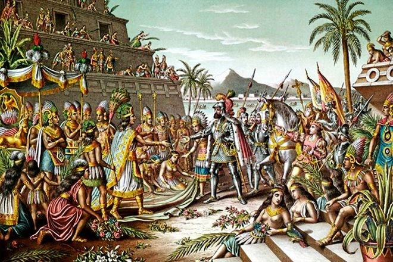
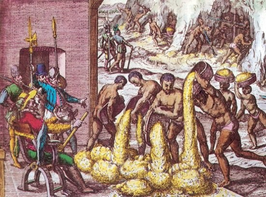
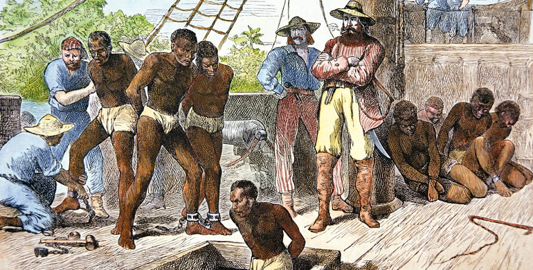
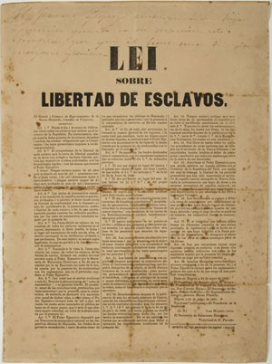

¿Qué son los derechos humanos?
¡Hola a todos! A continuación vamos a hablarles acerca de los derechos humanos, ¿alguna vez has oído sobre ellos?
Los derechos humanos son como reglas especiales que nos ayudan a vivir felices y seguros. Imagina que estás jugando un juego con tus amigos,
¿verdad? Ahora, piensa en que todos tienen que seguir ciertas reglas para que el juego sea divertido y justo. Los derechos humanos son como esas
reglas, pero para la vida real. Nos dicen que todos merecemos ser tratados con respeto, que debemos tener comida y agua, y que podemos decir lo que
pensamos. Son como un escudo mágico que nos protege a todos, grandes y pequeños, para que podamos vivir en un mundo donde todos tengan oportunidades
y se sientan importantes. Es como tener un superpoder que nos hace a todos superespeciales. ¡Así que recordar y respetar los derechos humanos es muy,
muy importante para que todos podamos vivir felices y contentos!
¿Qué es la esclavitud?
En tiempos antiguos, había algo llamado esclavitud, que era cuando una persona no tenía los mismos derechos importantes
que tenemos hoy en día. Esto significaba que no podían decidir cosas sobre sus vidas, como lo hacemos nosotros. En esa época, era común que
una persona pudiera ser considerada como propiedad de otra, y esa persona tenía todo el control sobre lo que le sucedía.Afortunadamente,
hoy en día sabemos que eso no está bien, y todos merecemos ser tratados con respeto y tener la libertad de tomar nuestras propias decisiones.

¡Importancia de los derechos humanos!
Los derechos humanos son como reglas especiales que todos debemos seguir para asegurarnos de que cada persona sea tratada con respeto
y justicia. Imagina que estás jugando un juego y hay reglas para que todos se diviertan y nadie salga lastimado. Los derechos humanos son como esas
reglas, pero para la vida real. Todos, grandes y pequeños, tenemos derechos a ser tratados bien, a tener un hogar seguro, a aprender cosas nuevas y a
decir lo que pensamos. Es importante respetar los derechos de los demás y recordar que todos somos diferentes pero igualmente valiosos.
¡Así es como creamos un mundo donde todos pueden vivir felices y seguros!
¿cómo era la situación de los derechos humanos en la época de la conquista?
Los inicios de la esclavitud
Cuando los españoles llegaron a América, estaban muy emocionados y empezaron a explorar. Descubrieron que estas tierras tenían muchas cosas
valiosas, como el oro y la plata, ¡y eso les encantó! Después, hicieron amigos con los indios, pero tristemente, en lugar de ser buenos amigos, decidieron
hacerlos trabajar mucho sin dejarlos ser libres.

Los indígenas tenían ciertos derechos especiales. Se les permitía tener sus propias cosas, como terrenos para cultivar y animales para criar. También podían comerciar,
lo cual significa intercambiar cosas, sin tener las limitaciones que tenían otros grupos como mestizos, mulatos o afros. Aunque la nobleza española mandaba en ese tiempo,
los indígenas tenían ciertos privilegios y no tenían que pagar ciertos impuestos. Además, sus hijos iban a escuelas especiales relacionadas con grupos religiosos.

Al ser la principal fuerza de trabajo de la época, los indígenas trabajaban mucho en lugares como minas, granjas y construcciones. Los indígenas eran como
niños ante la ley y por ello los protegían. Sin embargo, en la vida real, la vida de los indígenas era muy difícil, estaban cerca de ser como otros grupos que,
según las leyes, eran considerados legalmente inferiores.
Después de un tiempo, por los trabajos tan pesados que hacían y como no estaban acostumbrados, los indígenas empezaron a enfermar y a morir disminuyendo la
población, así que los españoles pensaron en traer a personas más fuertes y resistentes. ¡Entonces trajeron a personas de África! Fue un tiempo en el que los
españoles querían tener muchas cosas preciosas, como el oro y la plata, así que hicieron que muchas personas trabajaran duro en las minas para obtenerlas.
La llegada de los esclavos africanos a Colombia
A finales del siglo XVI, algunas personas pensaron en llevar a personas de África a América para ayudar con el trabajo. Esto sucedió porque
necesitaban más gente para hacer diferentes trabajos, y alguien llamado Fray Bartolomé de las Casas tuvo la idea de traer esclavos. Estos esclavos venían de
lugares como Guinea, Sierra Leona, el Congo y Angola. Querían que los indígenas no tuvieran que hacer trabajos muy difíciles, así que trajeron a personas de
África para hacer esos trabajos. La Corona española, que era como el gobierno, puso reglas desde el principio para controlar el comercio y asegurarse de recibir impuestos.

Los esclavos llegaban desde África en barcos a Colombia, y los bajaban a un lugar llamado Cartagena. Llegaban también personas ricas con mucho dinero
que querían comprar esclavos. Algunos compraban hombres y mujeres para trabajar en las haciendas y en las casas. Las mujeres ayudaban con las tareas del
hogar, y los hombres trabajaban en el campo.
Comprar esclavos era como comprar cosas, y esos esclavos se volvían propiedad de las personas ricas. Tener esclavos los hacía sentir importantes porque
no todos podían comprarlos. Era un gran negocio que hacía a muchas personas ricas. El precio de un esclavo dependía de su fuerza y del trabajo que pudiera
hacer. Los más fuertes costaban más. También, los hombres valían más que las mujeres. Los negros eran considerados la parte más baja de la sociedad en ese
tiempo. No tenían derechos y eran tratados peor que los indígenas según las leyes.
Para que todos supieran de quién eran, marcaban a los esclavos como se hace con las vacas. Cuando hacían el trato, usaban un hierro caliente para marcar la
piel del esclavo. La marca usualmente iba en el pecho con una “R” de la Corona real y en la espalda con las letras del nombre del dueño. Algunos eran marcados
en la cara. Era muy humillante.
Cansados del trato que recibían, los esclavos decidieron no quedarse quietos e hicieron diferentes cosas para protegerse. Algunos pelearon contra sus dueños,
otros se mataban a sí mismos o a sus hijos para que no fueran esclavos como ellos. También, formaron grupos secretos y se escaparon a las montañas. A los que
lograban escapar, les llamaban "cimarrones", y en esos escondites hicieron comunidades llamadas "palenques". Los negros que vivían allí seguían con las costumbres
que tenían en África. Aunque eran perseguidos y a veces atrapados, era difícil para los dueños llegar hasta ellos, así que a veces dejaban de buscarlos. Sin embargo,
esto hacía que vigilaran más a los esclavos que quedaban, y tomaban medidas más estrictas para evitar que se escaparan.
Fin de la esclavitud
Alrededor del año 1750, la gente comenzó a pensar de manera diferente acerca de los esclavos. En ese entonces, algunos pensaron que los esclavos
deberían ser tratados como personas normales, con los mismos derechos que todos. La primera cosa que hicieron fue bautizar a los esclavos, dándoles un nombre y
un apellido, para que pudieran tener una familia como todos los demás.

Hubo personas valientes en diferentes países que trabajaron muy duro para detener la esclavitud. Sus ideas se difundieron por todo el mundo y, poco a poco, los
esclavos empezaron a ser liberados por sus dueños.
En Colombia, la liberación de los esclavos sucedió lentamente. Comenzó en 1821 en algunas ciudades como Cartagena, Mompox, Popayán, Zipacón, Rionegro, entre otras.
Fue un proceso largo porque hubo algunos problemas que lo retrasaron. Finalmente, el 21 de mayo de 1851, el presidente José Hilario López firmó una ley que decía que
a partir del 1 de enero de 1852, todos los esclavos serían libres. ¡Eso fue un gran paso para la libertad!
Tiempo atrás, hubo una discusión importante sobre la liberación de los esclavos. Simón Bolívar, un hombre muy famoso por ser un precursor en el proceso de independencia
de Colombia, en 1816 propuso que si los esclavos se unían al ejército patriota, podrían ser libres. Después de que el país se independizó, hicieron una ley en el Congreso
de Cúcuta en 1821, llamada Libertad de vientres. Esta ley decía que los bebés nacidos de madres esclavas después de 1821 serían libres cuando cumplieran 18 años, pero tenían
que trabajar para los dueños de sus madres. Bolívar estuvo de acuerdo con esta ley, a pesar de que antes había hablado de libertad total para todos. No fue hasta 1852 que
18 mil esclavos en la Nueva Granada finalmente fueron liberados. Sin embargo, aunque la ley decía que todos eran iguales, en realidad no recibieron ayuda para salir de la
pobreza y no tenían muchas oportunidades para estudiar y mejorar sus vidas.
No tenían cosas propias y tenían que pedir trabajo en granjas. Pero, aunque trabajaban mucho, no les daban dinero ni les dejaban tener un pedacito de tierra para cultivar.
Solo les daban comida y un lugar para dormir, así que en realidad, seguían siendo como esclavos.
Les quitaban casi todos sus derechos, incluso el derecho a la vida. Los mataban cuando ya no podían trabajar más, o los tiraban al mar si se enfermaban en los barcos. Algunos
se enfermaban mucho y morían porque no los cuidaban como deberían. Esto todavía sucede hoy en día, porque a las personas enfermas que no tienen dinero no las atienden en los
hospitales y las dejan morir.
Otro derecho muy importante que les quitaban era el derecho a la libertad. Desde el momento en que los capturaban, los encerraban y los transportaban encadenados para que nopudieran
escapar.Esto también sucede hoy en día, con personas secuestradas que viven en condiciones similares, atadas o encadenadas en lugares oscuros y pequeños donde apenas pueden moverse.